01
Open trip
Kamu jual paket trip, peserta bayar, kamu atur kru.
- Kuota peserta dan daftar tunggu otomatis
- Kru panitia dan upah porter, guide, sweeper
- Batal dan hitungan pengembalian dana
- Bagi hasil dan penyelesaian untung rugi
Budgeting untuk penyelenggara pendakian
Aplikasi budgeting untuk penyelenggara open trip, tektok, dan pendakian bersama. Peserta, uang masuk dan keluar, bagi hasil, sampai kwitansi PDF, semuanya di HP dan jalan tanpa sinyal.
Basecamp gratis selamanya; data tripmu tidak hilang saat naik lencana.
Sudah diunduh kali
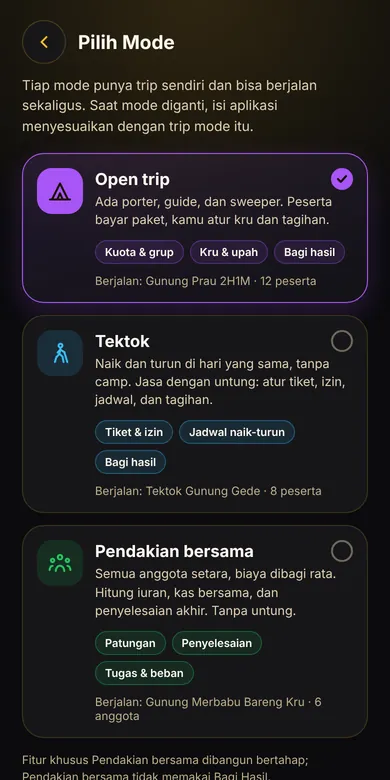
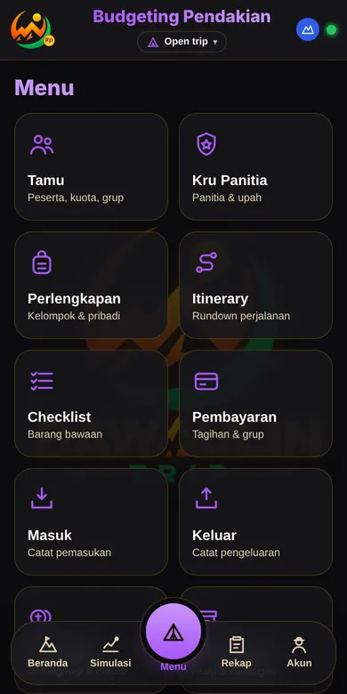
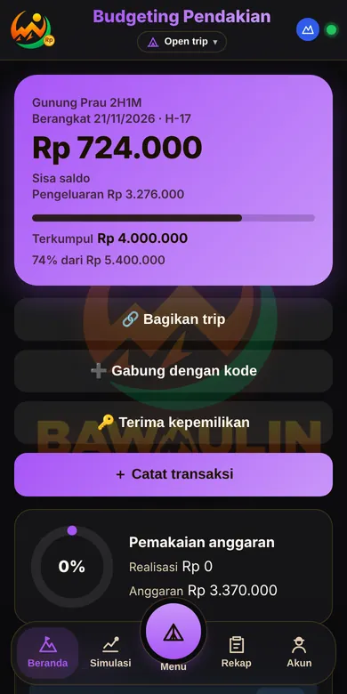
Galeri aplikasi
Geser ke samping untuk melihat. Pilih mode untuk menyaring. Nama dan angka di tangkapan layar adalah data contoh.
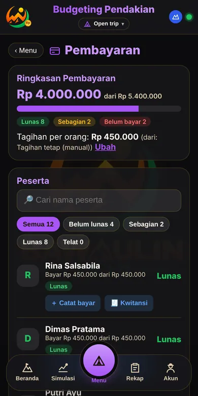
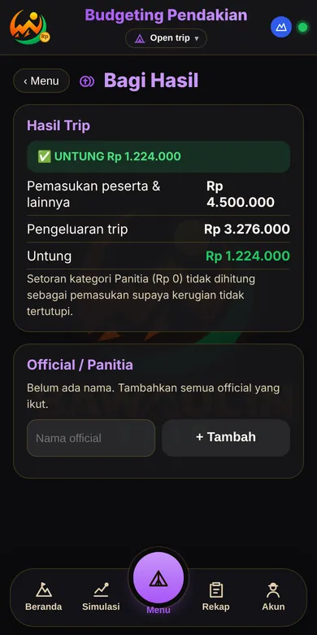
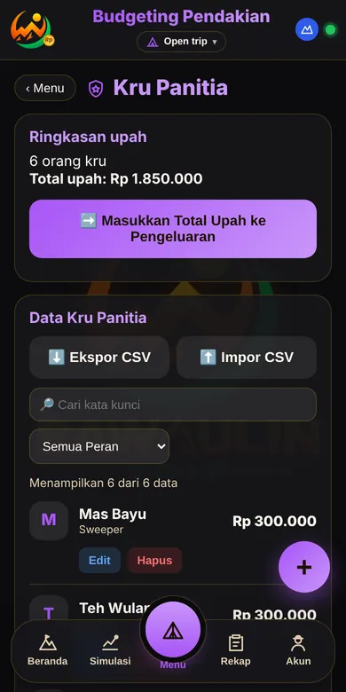
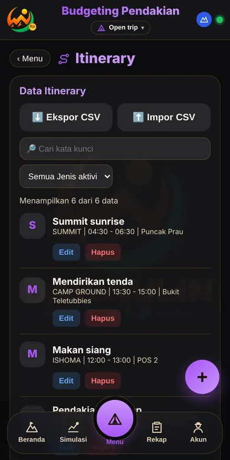
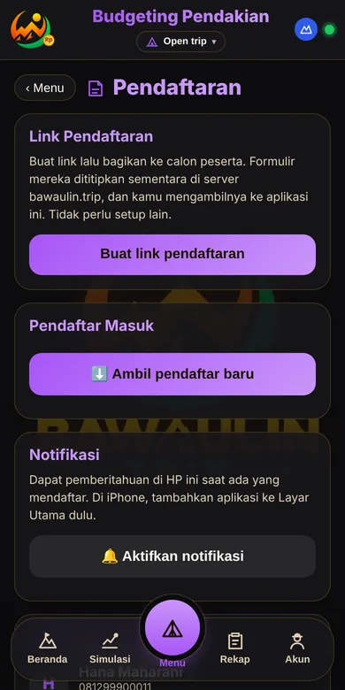
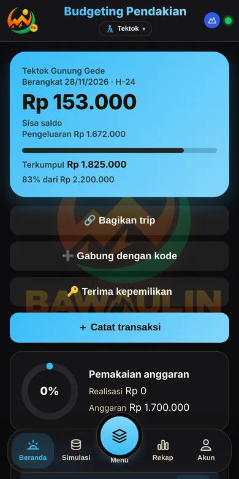
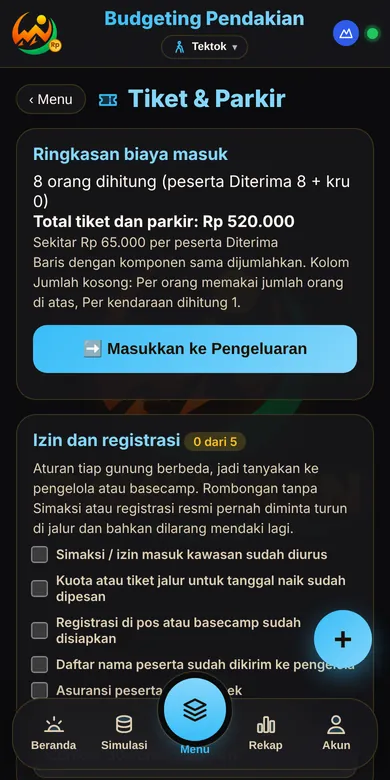
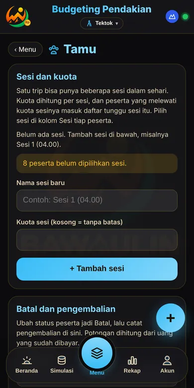
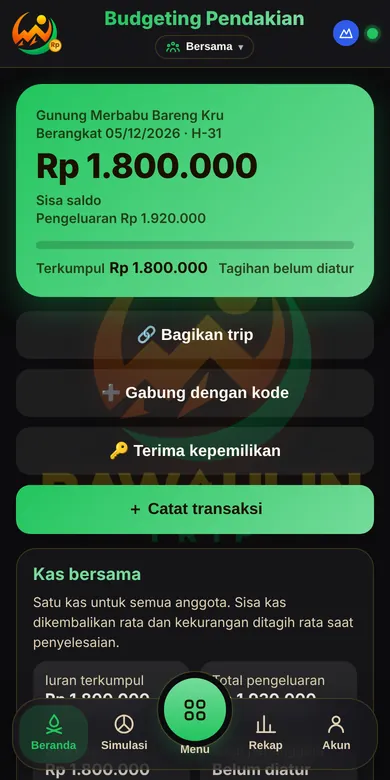
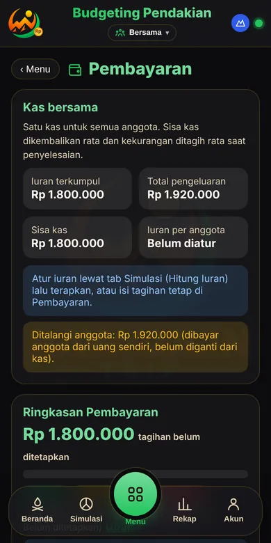
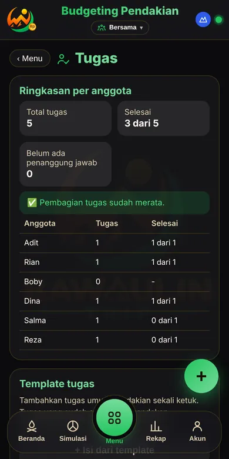
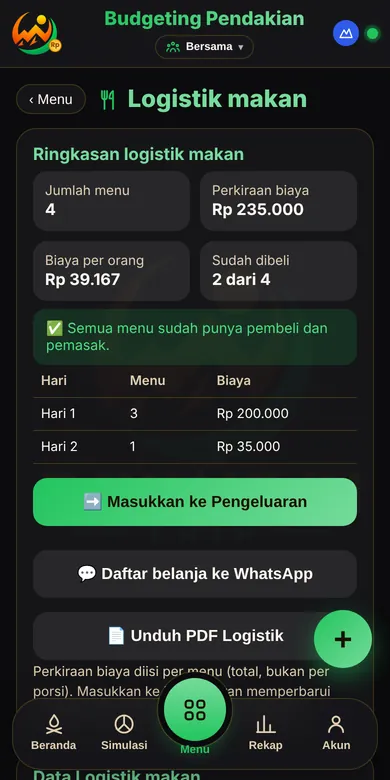
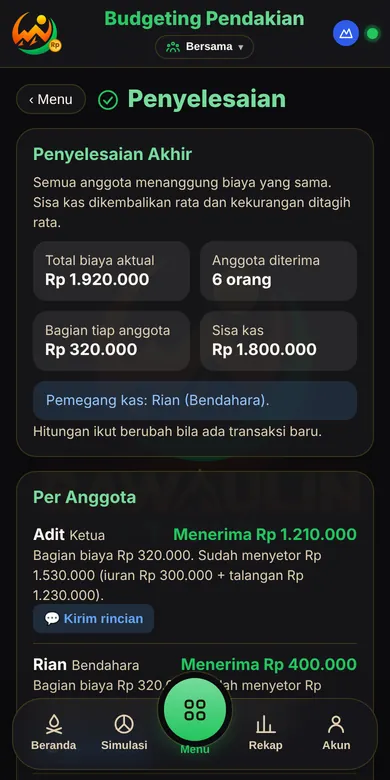
Tiga mode
Pilih mode sesuai trip yang kamu jalankan. Tiap mode punya buku keuangan sendiri, jadi angka tidak tercampur.
Kamu jual paket trip, peserta bayar, kamu atur kru.
Naik dan turun di hari yang sama, tanpa camp.
Semua anggota setara, biaya dibagi rata, tanpa untung.
Fitur
Uang peserta, chat WhatsApp, dan Excel tidak lagi tercecer. Semuanya dicatat di satu tempat, dari open trip sungguhan.
Daftar tamu, status diterima atau menunggu, DP dan pelunasan, kwitansi bernomor, dan tagih lewat WhatsApp satu per satu.
Catat pemasukan dan pengeluaran per kategori, dengan bukti nota. Aplikasi memperingatkan saat pemakaian mendekati anggaran.
Coba beberapa skenario biaya, lihat titik impas, lalu terapkan ke anggaran. Bandingkan dengan kenyataan setelah trip.
Rundown perjalanan, barang kelompok dan pribadi, sewa alat, dan checklist yang bisa dicentang di gunung.
Rekap trip dan kwitansi siap kirim. Di Sabana ke atas, PDF memakai logo, kop, dan stempelmu sendiri.
Semua fitur utama bekerja offline. Aplikasi hanya perlu online sesekali untuk memeriksa status lencana.
Data trip, peserta, dan uang disimpan di HP. Cadangkan ke Drive atau WhatsApp, dan kunci dengan PIN, pola, atau sidik jari.
Setelah trip selesai, transaksi uang dikunci dan semua perubahan tercatat, jadi angka akhir tidak bisa bergeser diam-diam.
Cara mulai
Ketuk Unduh APK, buka berkasnya, lalu pasang. Basecamp langsung bisa dipakai tanpa bayar.
Butuh lebih banyak? Pilih Sabana, Puncak, atau Edelweis.
Salin kode dari aplikasi, tempel di halaman beli, lalu bayar lewat Midtrans.
Setelah pembayaran terverifikasi, lencana aktif otomatis di HP-mu. Tanpa kunci yang perlu ditempel.
Lencana
Jawab dari kebutuhanmu, bukan dari harga. Kamu selalu bisa mulai gratis lalu naik kapan saja; datamu tidak hilang.
Gratis. Untuk kamu yang baru mulai atau mengurus satu trip dalam satu waktu.
Berbayar. Untuk penyelenggara yang trip-nya rutin dan ingin hasil yang rapi di depan peserta.
Berbayar. Untuk tim yang mengurus banyak trip dan perlu bekerja bareng.
Bayar sekali, tanpa tanggal berakhir. Untuk pemakai jangka panjang.
Harga
Mulai dari Basecamp yang gratis. Tiap lencana membawa semua isi lencana di bawahnya.
Untuk menyelesaikan satu trip dengan puas, tanpa bayar dan tanpa batas waktu.
Untuk penyelenggara aktif yang butuh skala dan hasil yang rapi di depan peserta.
Untuk tim yang menjalankan banyak trip dan perlu kerja bareng.
Puncak tanpa tanggal berakhir, bayar sekali, selama layanan beroperasi.
Pembayaran lewat Midtrans (QRIS, e-wallet, transfer, dan lainnya sesuai yang tersedia). Lencana aktif otomatis di HP-mu setelah pembayaran terverifikasi; perpanjangan dilakukan manual dengan membeli lagi, dan setelah berakhir ada masa tenggang 14 hari. Kamu perlu kode perangkat dari aplikasi. Data lama selalu bisa dibaca dan diekspor di semua lencana. Pembelian tunduk pada Syarat & Ketentuan dan kebijakan refund.
| Fitur | Basecamp | Sabana | Puncak | Edelweis |
|---|---|---|---|---|
| Trip dan mode | ||||
| Trip aktif sekaligus | 1 | 3 | 3 | 3 |
| Tiga mode (Open trip, Tektok, Pendakian bersama) | Ya | Ya | Ya | Ya |
| Tamu, itinerary, perlengkapan, checklist | Ya | Ya | Ya | Ya |
| Uang | ||||
| Masuk, keluar, pembayaran, kwitansi, tagih WA, talangan | Ya | Ya | Ya | Ya |
| Hitung Iuran, Kas bersama, penyelesaian (Pendakian bersama) | Ya | Ya | Ya | Ya |
| Bagi Hasil dan penyelesaian official | Tidak | Ya | Ya | Ya |
| Rekap antar-trip dan impor rekap | Tidak | Ya | Ya | Ya |
| Perencanaan | ||||
| Simulasi | 1 skenario | Tanpa batas | Tanpa batas | Tanpa batas |
| Simulasi vs Kenyataan | Tidak | Ya | Ya | Ya |
| Rekap Simulasi lintas mode | Tidak | Tidak | Ya | Ya |
| Pendaftaran online dan salin template | Tidak | Ya | Ya | Ya |
| Laporan | ||||
| PDF dan kwitansi | Pita bawaulin.cash | Logo, kop, stempel sendiri | Logo, kop, stempel sendiri | Logo, kop, stempel sendiri |
| Keamanan dan data | ||||
| Cadangan, PIN, pola, sidik jari | Ya | Ya | Ya | Ya |
| Data lama bisa dibaca dan diekspor | Ya | Ya | Ya | Ya |
| Kolaborasi (sedang dikerjakan) | ||||
| Sinkronisasi antar-HP | Hanya melihat (gabung) | Gabung, maks 3 trip teman | 3 trip, 6 HP per trip | 3 trip, 8 HP per trip |
| Izin per anggota, riwayat perubahan, catatan konflik | Tidak | Tidak | Ya | Ya |
| Dukungan | ||||
| Bantuan | Standar | Standar | Prioritas | Jalur prioritas |
| Akses awal fitur baru | Tidak | Tidak | Tidak | Ya |
| Pindah HP | 2x per tahun | 2x per tahun | 2x per tahun | Lebih longgar |
Istilah
Menghitung untung rugi trip lalu membaginya ke pengelola atau official. Di mode Pendakian bersama, aplikasi menunjukkan siapa harus transfer ke siapa dengan jumlah transfer paling sedikit.
Mencoba beberapa skenario biaya dan harga jual sebelum trip, lengkap dengan titik impas. Basecamp menyimpan satu skenario; Sabana ke atas tanpa batas dan bisa membandingkannya dengan hasil nyata.
Kamu membagikan satu link formulir. Calon peserta mengisi sendiri, lalu datanya kamu ambil ke daftar Tamu di aplikasi. Kamu mendapat notifikasi saat ada pendaftar baru.
Membuat trip baru yang sudah berisi itinerary, checklist, dan kategori dari trip sebelumnya. Peserta dan uang dikosongkan.
Satu layar yang merangkum untung rugi dan jumlah peserta dari semua trip, plus ekspor dan impor rekap untuk dikirim ke HP lain.
Beberapa HP memegang trip yang sama dan perubahan saling masuk, tetap bisa dipakai tanpa sinyal. Hanya Puncak dan Edelweis yang bisa membuat trip bersama; semua paket boleh bergabung, dan Basecamp hanya melihat. Pemilik mengatur izin dan melihat riwayat perubahan. Belum bisa dipakai saat ini.
Setelah masa aktif berakhir ada 14 hari dengan pengingat; semua fitur tetap jalan. Sesudahnya kembali ke Basecamp dan datamu tetap aman, bisa dibaca dan diekspor.
Kode seperti BU-ABCD-2345 di aplikasi (menu Akun) yang menandai HP-mu. Kamu menempelkannya saat membeli supaya lencana aktif di HP yang benar.
Tanya jawab
Basecamp gratis tanpa batas waktu: satu trip aktif di tiga mode dengan semua fitur dasar. Trip baru boleh dibuat setelah trip sebelumnya ditutup, jumlahnya tidak dibatasi.
Lencana melekat pada kode perangkat, jadi HP baru perlu dipindahkan lencananya. Hubungi kami lewat WhatsApp dengan kode perangkat HP lama dan HP baru plus bukti pembelian. Pemindahan gratis, maksimal 2 kali per tahun, dan lebih longgar untuk Edelweis. HP hilang atau rusak kami bantu. Data trip tidak ikut pindah sendiri, jadi cadangkan dulu di HP lama lalu pulihkan di HP baru.
Ini produk digital, jadi pembayaran yang sudah diterima tidak dikembalikan, kecuali lencana gagal diaktifkan karena kesalahan di pihak kami. Tidak berlaku untuk salah ketik kode, HP tidak cocok, atau berubah pikiran. Rincian dan cara mengajukan ada di Kebijakan refund.
Penyelenggara open trip pendakian yang bikin aplikasi ini karena capek ngitung manual. Lieur gawe, bawa ulin.